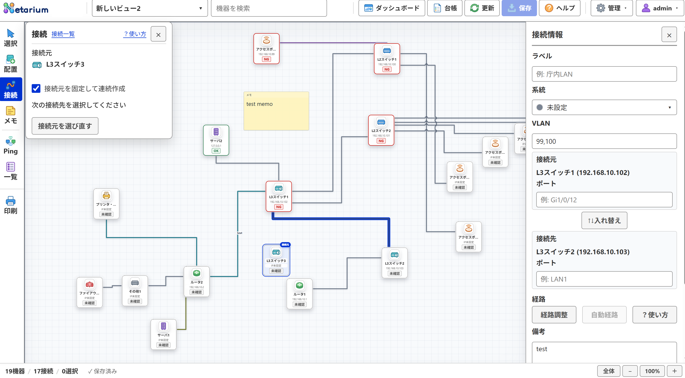
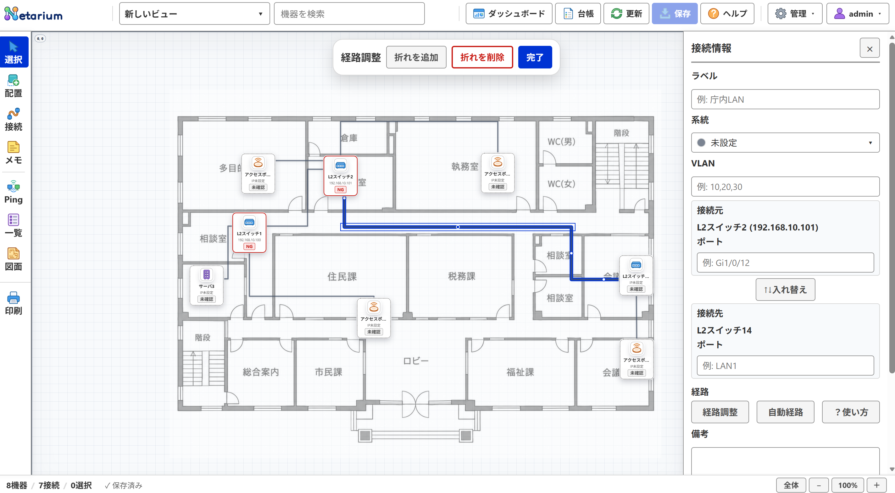

構成図の操作ガイド
キャンバス上の論理構成図および物理配置図における、機器の配置・接続・経路調整・メモ・印刷の手順を説明します。
キャンバスの表示と基本操作
キャンバスはネットワーク構成図を描画・編集する主作業領域です。
| 操作 | 方法と動作 |
|---|---|
| 移動（パン） | キャンバスの空白部分をドラッグすると、画面全体をスクロールできます。 |
| 倍率変更（ズーム） | マウスホイールの回転、または下部ステータスバー右端の「＋」「−」ボタンで拡大・縮小します。 |
| 標準倍率（100%） | ステータスバーの「現在倍率」を押すと100%に戻り、原点を左上端に合わせます。 |
| 全体表示 | 「全体」を押すと、配置済みの機器・メモが画面内に収まる倍率へ自動調整します。 |
注意: 初期表示および100%表示では原点を左上端に合わせ、配置不可領域用の余白を設けません。
作業モードの切り替え
左パレットの「作業モード」ボタンで操作内容を切り替えます。
| モード | 権限 | 主な操作と動作 |
|---|---|---|
| 選択 | 共通 | 機器をクリックして右パネルで詳細を確認します。管理者はドラッグで移動、ダブルクリックで台帳個票を開きます。 |
| 配置 | 管理者のみ | 新規機器の種別を選んでキャンバスをクリックし、連続配置します。台帳から未配置機器の配置も可能です。 |
| 接続 | 管理者のみ | 同一ビュー内の機器同士を結ぶ接続線を作成します。接続元を固定して連続作成できます。 |
| メモ | 管理者のみ | 空白部分をクリックして注釈メモ（1000文字以内）を作成・配置します。 |
| 印刷 | 共通 | 現在ビューの表示範囲または全体を紙やPDFへ出力するプレビュー画面を開きます。 |
接続の作成と削除
接続は同一ビューに配置した機器同士を結びます。作成・削除は管理者のみ利用できます。


- 左パレットで「接続」を押します。
- 接続元にする機器をクリックします（左パネルの「接続元を固定」をONにすると、同じ機器から複数の接続先へ連続して作成できます）。
- 接続先にする機器をクリックすると、接続線が作成され自動保存されます。
- 作成後、右パネルの「接続情報」で系統・VLAN・ラベル・ポート・備考を編集できます。
- 削除する場合は、選択モードで接続線を選び、右パネルの「接続を削除」を押します。
接続モードのまま空白部分を左ドラッグすると、表示倍率を変えずにキャンバスを移動できます。接続元を選んだ後も、表示を移動してから接続先をクリックできます。
接続系統の管理
接続系統は、全ビュー共通で接続線の用途（基幹LAN、庁内LAN、監視用など）を色分けする設定です。
- 上部バーの「管理」→「接続系統設定」を開きます。
- 新規作成は「新規作成」を押し、系統名（100文字以内）と用意された8色から色を選んで「登録」を押します。
- 既存系統の変更は一覧から選択し、名称・色を変更して下部の「適用」を押します。
- 使用中の系統を削除する場合は、割り当て中の接続線の扱いを確認して削除を実行します。
閲覧者は系統名・色・使用件数の確認のみ可能で、登録・変更・削除は行えません。
ビュー・機器のリンクを共有する
特定のビューや機器を直接開くURLを取得し、担当者間で共有できます。
- ビューのリンク: 上部バー中央のビュー選択欄右隣にあるコピーアイコンを押すと、現在ビューの直リンクをクリップボードに取得します。
- 機器のリンク: 右プロパティパネルまたは個票シート上部の「機器のリンクをコピー」を押すと、該当機器を指定した直リンクを取得します。
リンクを開くにはログインが必要です。未保存のビュー・機器は保存後にリンクをコピーしてください。リンクの所持によってアクセス権限が増えることはありません。
ビュー内一覧と一括設定
現在ビューに含まれる機器・接続の一覧確認と、接続属性の一括変更を行えます。
- 左パレットの「一覧」を押し、「機器」または「接続」タブを選びます。
- 「機器」タブの「台帳で開く」を押すと、現在ビューで絞り込んだ状態で機器台帳を開きます。
- 「接続」タブ下部の「一括設定」で、現在ビューの全接続に対して系統・VLAN・ラベル・備考を一括適用できます。
- 「変更内容を確認」で変更前後を確認し、「適用」ボタンで確定すると自動保存されます。
選択した接続の経路を調整する（管理者のみ）
自動計算された接続線の経路を手動経路へ切り替え、水平・垂直の区間や折れ目を任意の位置へ動かします。


- 選択モードで調整したい接続線をクリックし、右パネルの「経路調整」を押します。
- 青くハイライトされた区間をドラッグして、水平・垂直方向へ動かします。
- 折れ目を増やしたい場合は上部バーの「折れを追加」、減らす場合は「折れを削除」を押します。
- 上部バーの「完了」を押して調整モードを終了します（操作ごとに自動保存されます）。
- 手動調整を破棄して自動経路に戻したい場合は、右パネルの「自動経路」を押します。
フロア図面自体の調整中は経路調整を起動できません。図面の調整を完了してから実行してください。
接続の重なりと交差の見分け方
同じスイッチから多数の接続線が平行に延びる場合、線の重なりや交差を視覚的に判別しやすく描画されます。
- 平行区間の分離: 接続線は機器付近から自動的に分岐し、長い平行区間は一定間隔を離して表示します。
- 交差表現: 接続線同士が交差する箇所は交差判定を行い、別の線であることを明確にします。
- 重なりの解消: 機器が密集して線が重なる場合は、機器の位置を少し離すか「経路調整」で手動迂回させてください。
キャンバスにメモを置く（管理者のみ）
キャンバスの任意の位置に注釈メモを配置できます。
- 左パレットの「メモ」を押し、空白部分をクリックします。
- 入力欄に本文（1000文字以内）を入力します。改行もそのまま保持されます。
- Ctrl+Enter、または外側をクリックして確定すると自動保存されます。
- 既存メモの編集はダブルクリック、または選択してEnterキーを押します。
- 削除する場合は、選択してDeleteキー、または右パネルの「メモを削除」を押します。
構成図を紙・PDFへ出力する
現在表示中のビューをA4/A3用紙やPDFへ印刷します。
- 印刷したいビューを開き、左パレットの「印刷」を押します。
- 印刷範囲（「全体」または「現在の表示範囲」）と用紙サイズ（A4/A3、縦/横）を選びます。
- 印刷に含める機器種別や表示項目（IPアドレス、接続線、メモ等）をチェックします。
- プレビューを確認し、「印刷」ボタンを押してブラウザの印刷ダイアログから出力します。